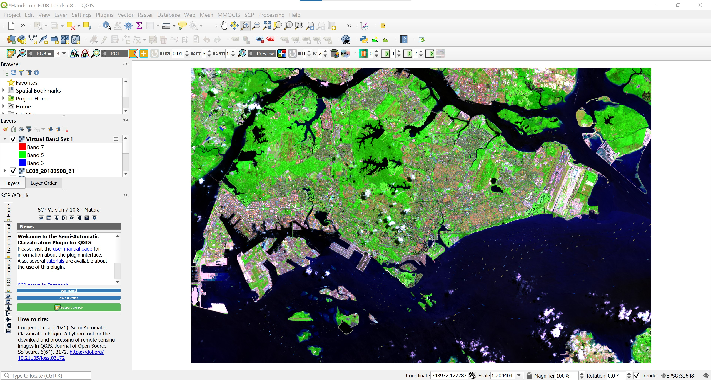

4 Processing and Visualising Landsat 8 Data
4.1 Overview
In this chapter, we will focus on learning how to process the downloaded Landsat 8 data using QGIS and Semi-Automatic Classification Plugin of QGIS. It is a continuation of Chapter 2. We assume that you already have Landsat 8 data set(s) downloaded. If you have yet to do so, please refer to Chapter 2: Acquiring Landsat 8 Data to download a Landsat 8 data set of an area of interest.
By the end of this chapter, you will acquire the skills to:
- extract subset from a complete scene,
- enhance individual band for clearer visualisation,
- create composite images by using multiple bands for visual interpretation,
- compute vegetation indices for land cover analysis.
4.2 Installing Semi-Automatic Classification Plugin
Before we getting started, we will install a QGIS plugin specially designed for digital image processing and classification called Semi-Automatic Classification Plugin (SCP). It provides tools for the download, the preprocessing and postprocessing of images. It also allows for the supervised classification of remote sensing images. The plugin requires the installation of GDAL, OGR, Numpy, SciPy, and Matplotlib. Some tools require also the installation of SNAP (ESA Sentinel Application Platform). For more information please visit https://fromgistors.blogspot.com .
- From the menu bar, click on Plugin -> Manage and Install Plugins.

Plugins dialog window appears.
- At the search, type Semi-Automatic.
You will see the plugin appears.

- Click on Install Plugin button to install the plugin.
When the installation completed,
- click on the Close button to close the dialog window.
By default, SCP tools menu and icons should appears on your QGIS. If they are not there, do the followings:
- From the menu bar, click on View -> toolbars.

- Click on the check-box in front of SCP Working Toolbar.
Notice that SCP Working Toolbar is added on QGIS menu bar.

4.3 Importing Landsat 8 data
Now, let us import the Landsat 8 data into QGIS environment.
- From the menu bar, select Layer -> Add Layer -> Add Raster Layer.

Data Source Manager|Raster dialog window appears.

Click on the button at the end of Raster dataset(s).
Navigate to the folder where the Landsat 8 data were reside.
Press on ctrl key, then click on B1 until B11 data.
- Then, click on Open button.
Your screen should look similar to the screenshot below.

Notice that the scene cover areas beyond the national boundary of Singapore.
4.4 Extracting Scene within Singapore
We are going to use the extend of MP14 Planning Subzone GIS data to extract the raw scene. The data can be downloaded from data.gov.sg homepage. It is in ESRI shapefile format.
4.4.1 Importing MP14 Planning Subzone boundary into QGIS
After downloading MP14 Planning Subzone boundary shapefile, we will import it into QGIS environment.
- From the menu bar, select Layer -> Add Layer -> Add Vector Layer.

Data Source Manager|Vector dialog window appears.
Click on the button at the end of Vector Dataset(s).
Navigate to the folder where MP14 Planning Subzone Boundary shapefile are reside.
Click on the file with .shp extension.
Click on Open button.
Your screen should look similar to the screenshot below.

- Click on Add button.
When the data is added onto QGIS successfully.
- click on Close button to close the dialog window.
Your screen should look similar to the screenshot below.
Before we can perform the raster data extraction, it is important for us to ensure that the reference data (i.e. MP14 Planning Subzone Boundary) has a proper EPSG code.
- Right-click on
MP14_PLNG_AREA_NO_SEA_PLand select Properties from the context menu. - If necessary click on Source tab.
Notice that although the shapefile is in svy21 projection system but it does not have appropriate EPSG code.

- Click on the drop-down list behind, select EPSG:3414 - SVY21 / Singapore TM.

Click on Apply button to update the change.
Click on OK to close the dialog window.
4.4.2 Extracting raster data
Now, we are ready to extract the data.
- From the menu bar, select Raster -> Extraction -> Clip Raster by Extent.

Clip Raster by Extent appears.
- For Input layer, select one of the raster layer from the list.
For Clipping extent, click on the button at the end of the pane.
Select Calculate from Layer from the context menu,

- Select
MP14_PLNG_AREA_NO_SEA_PLfrom the list.
- Click on Run button.
When the process completed, read the process log carefully to ensure that there is not error.
- Click on Close button to close the dialog window.
Notice that a temporary layer called Clipped is added in the Layers panel and display on the View window.
4.4.3 Saving the extracted raster layer into Geopackage
Next , we will save the temporary clipped raster layer into GeoPackage.
From Layer panel, right-click on Clipped.
Select Export -> Save as from the context menu.
Save Raster Layer as dialog window appears.
For Format, select GeoPackage from the drop-down list.
For File name, navigate to
GeoPackagefolder (Note: Create a folder calledGeoPackageif you do not have one).Give a new GeoPackage name (i.e. SG).
For Layer name, give the layer a name such as
LC08_20180508_B1.
Note that this is an Landsat 8 data, we tend to include the date when the scene was captured (i.e. 20180508) and which band (i.e. B1) for the layer name.
- Lastly, click on OK button to run the process.
When the process completed, notice that a new layer called LC08_20180508_B1 is added into Layer panel and display on View window.

- Remove
Clippedtemporary layer from Layer panel.
DIY: Repeat the steps you had learned to extract the remaining 10 bands and save them into the newly created GeoPackage.
- Check all the extracted file carefully. If all layers are in proper order. Remove the raw scene layers from QGIS’s Layer panel.
The Layer panel should have the extracted layers as shown below.
4.5 Image Enhancement using QGIS
Image enhancement algorithms are applied to remotely sensed data to improve the appearance of an image for human visual analysis or occasionally for subsequent machine analysis. There is no such thing as the ideal or best image enhancement because the results are ultimately evaluated by humans, who make subjective judgments as to whether an enhanced image is useful.
In this section, you will learn how to perform image enhancement task by using basic QGIS function.
- From Layers panel, click on the check-box of
LC08_20180508_B1.
Your screen should look similar to the screenshot below.
This is Landsat Band1 image. Unfortunately, this image layer has very poor contrast. As a result, we can hardly see any ground features from the image. This issue can be address by using image enhancement provided by QGIS.
- From the menu bar, select Zoom in button.
Build a small rectangle look similar to the screenshot below.
Your screen should look similar to the screenshot below.
- Now, right-click on
LC08_20180508_B1, select Stretch Using Current Extend from the context menu.
Your screen should look similar to the screenshot below.
Let us zoom back to the full extent of the image and take a look at what has changed.
- From Layers panel, right click on
LC08_20180508_B1and select Zoom to Layer(s).
Now you can see the ground feature much clearer because the image have relatively better contrast as shown in the screenshot below.

4.6 Creating Composite Images using SCP
With satellite remote sensing systems it is possible to detect and record parts of the electromagnetic spectrum that cannot be detected by the naked eye, for example, the infrared band. To visualise this information we pair up display colours (red-green-blue) with spectral bands in the observation system that do not necessary correspond to them. In so doing, we create coloured composites that are sometimes called ‘false colour images’. In this section, you will learn how to create colour composite image by using SCP of QGIS.
4.6.1 Building a band set
Image input in SCP is named band set. One of the main changes of SCP 6 will be the ability to define multiple band sets (in SCP 5 only one Band set can be defined) as input for classification and other tools.
Now, let us create a band set by using Band Set tool.
- From the menu bar, click on Semi-Automatic Classification Plugin icon.
Semi-Automatic Classification Plugin dialog window appears.
Next, we will select the input image bands from Single Band list.
From Single band list, click on the check-box in front of Band 1 to Band 7.
Then, click on the plus icon located at the right panel.
Notice that the selected seven bands have been added into Band set definition list as shown below.
Band sets are identified by numbers (i.e. Band set 1) and the active band set (i.e. highlighted with a bold green name) is used as input for the tools in SCP dock. It will be possible to change the classification input just by selecting the corresponding band set tab. In a few clicks we will be able to compare the classification previews of different images without the need to create different QGIS projects.
Next, we will update the wavelength summary.
- At Wavelength quick settings, click on the drop-down list at the back.
- Then, select Landsat 8 OLI [bands 1, 2, ,3, 4, 5, 6, 7] which is the input images source.
Notice that the Band set list information have been updated.
4.6.2 Creating natural colour composite image
Now, we are ready to create colour composite image by using the Band set.
First, we will create a natural colour composite by using
Return to QGIS window.
Click on the drop-down list behind RGB pane.
Select 4-3-2 from the drop-down list. If it is not available, type directly onto the pane.
Notice that a Virtula Band Set 1 is added onto Layers panel.

Your screen should look similar screenshot below.

This is what the terrain would look like if we were onboard the satellite platform looking down on Singapore.
While healthy vegetation appears green, cleared fields are light, unhealthy flora is brown and yellow, roads are grey, and coastlines appear whitish. This band combination is well suited for the analysis of aquatic ecosystems, determining water depth. It is also used to study man-made features. With this band combination, logged areas and sparse vegetation are poorly detected, and it is difficult to differentiate one type of vegetation from another.
4.6.3 Creating false colour composite image
- Let us now create a false colour composite by select the bands’ RGB as 5-4-3.
In false colour composite image, vegetation appears in shades of red, urban areas are green-blue, and the soil color varies from dark to light brown. The shades of deep red indicate healthy and/or broadleaf vegetation, while grassy or sparse/shrubby vegetation appears in lighter shades. This combination is very popular and is used for analyzing vegetation, monitoring soil and crops.
4.6.4 Creating colour composite with Bands 7-5-3
- Now, let us create a new colour composite by select the bands’ RGB as 7-5-3.
Your screen should look similar to screenshot below.

This band composite produces an image close to natural colors, and at the same time allows analyzingvthe atmosphere and smoke. Healthy vegetation appears bright green, the grass is green, bright pink areas indicate bare earth, brown and orange hues are characteristic of sparse vegetation. Dead vegetation appears orange, and the water is blue. This band composite is well suited for the analysis of agricultural lands and wetlands, monitoring the dynamics of fires, and post-fire analysis of the territory. Burnt-down areas will appear bright red.
DIY: Using the steps your had learned, create the following colour composites: (5,6,2), (5,6,4), (7,6,4), (6,5,4) and (7,6,5)
4.7 Deriving Band Combinations, Ratios and Indices
For simple applications such as delineating surface water boundaries, a simple process such as display of a near or middle infrared band can be sufficient. Algebraic combinations of certain bands via division, addition, subtraction, or multiplication can lead to enhanced information. Differences and ratios in various bands are primarily used for change detection and spectral enhancement studies.
The most common image band ratios typically include the following: infrared band over red band for vegetation distribution; short-wave infrared band over near infrared band for urban built-up area, green band over red band for mapping surface water bodies and wetland delineation; red band over infrared band for mapping turbid waters; and red band over blue band or red band over green band for mineral mapping.
In this section, you will learn how to use Raster Calculator function of QGIS to compute these indices.
4.7.1 Computing Normalized Difference Vegetation Index (NDVI)
Normalized Difference Vegetation Index (NDVI) quantifies vegetation by measuring the difference between near-infrared (which vegetation strongly reflects) and red light (which vegetation absorbs). The general formula of NDVI is defined as:
whereby NIR indicates near infra-red band and Red indicates red band.
The result of this formula generates a value between -1 and +1. If you have low reflectance (or low values) in the red channel and high reflectance in the NIR channel, this will yield a high NDVI value. And vice versa.
Overall, NDVI is a standardized way to measure healthy vegetation. In general, healthy vegetation (chlorophyll) reflects more near-infrared (NIR) and green light compared to other wavelengths. But it absorbs more red and blue light. When you have high NDVI values, you have healthier vegetation. 
Since we already know that for Landsat 8, band 5 and band 4 are near infra-red and red respectively. We can compute NDVI by using Raster Calculator of QGIS.
- From menu bar, click on Raster -> Raster Calculator.
Raster Calculator dialog window appears.
- Click on the check-box in front of Create on-the-fly raster instead of writing layer to disk.
- By clicking on appropriate band from the Raster Band pane and Operators pane, construct a calculation expression as shown on the screen shot below.
- When you are ready, click on OK button to run the process.
With a second, a temporary raster layer is added on Layers panel and display on View window as shown on the screenshot below.
Notice that the NDVI values range from -0.33 to 0.63. NDVI always ranges from -1 to +1. But there isn’t a distinct boundary for each type of land cover. For example, when you have negative values, it’s highly likely that it’s water. On the other hand, if you have an NDVI value close to +1, there’s a high possibility that it’s dense green leaves. But when NDVI is close to zero, there are likely no green leaves and it could even be an urbanized area.
DIY: Using the steps you had learned, save the temporary NDVI layer in GeoTIFF. For easy visual interpretation, you might want to change the colour scheme to a diverging pseudo colour scheme similar to the screenshot below.
4.7.2 Computing Normalized Difference Built-up Index (NDBI)
There are lots of indexes for the analysis of built-up area. Normalized Difference Built-up Index (NDBI), Built-up Index (BU), Urban Index (UI), Index-based Built-up Index (IBI), Enhanced Built-up and Bareness Index (EBBI) are most common indexes for analysis the built-up areas. These different indexes having their own formula, own calculation method. The build-up areas and bare soil reflects more SWIR than NIR. Water body doesn’t reflect on Infrared spectrum. In case of greenie surface, reflection of NIR is higher than SWIR spectrum.
The general formula of NDBI can be defined as follow:
NDBI = (SWIR – NIR) / (SWIR + NIR)
whereby NIR and SWIR are the near infrared (NIR) and the Short-Wave infrared (SWIR) bands respectively.
Similar to NDVI, the NDBI value lies between -1 to +1. Negative value of NDBI represent water bodies where as higher value represent build-up areas. NDBI value for vegetation is low.
Now, let us compute NDBI by using Raster Calculator of QGIS.
DIY: Using the steps you had learned, compute the NDBI by using Landsat 8 bands, save the temporary NDBI layer in GeoTIFF format.
Screenshot below show an example of NDBI layer. Areas with positive NDBI are shaded in brown and areas with negative NDBI are shared in green.